Welcome!
Portfolio de Scribantrope
Qui suis-je ?
Bienvenue sur mon site personnel !
Je suis Pauline C. Boisgallais, alias Scribantrope, étudiante en deuxième année à l'école d'ingénieurs
IMAC (Image, Multimédia, Audiovisuel et Communication). Cette école à la formation très pluridisciplinaire, comprenant sciences "traditionnelles" (mathématiques, physique...), informatique, arts et multimédia, me correspond car je m'intéresse à une grande diversité de domaines scientifiques et artistiques.
Vous trouverez ici un résumé de ma formation et de mes compétences, ainsi que des présentations de mes réalisations et de mes projets en cours.
N'hésitez pas à me contacter pour toute question, remarque, idée ou proposition !
Formation :
Juin 2011 Bac général filière scientifique, mention Très Bien - Lycée Marie-Immaculée (Sées, Orne)
2011-2012 CPGE filière MPSI - Lycée Charlemagne (Paris 4e)
2012-2013 CPGE filière PSI - Lycée Paul Valéry (Paris 12e)
2013-2016 École d'ingénieur IMAC (Image Multimédia Audiovisuel et Communication) - Université de Marne-la-Vallée, Champs-sur-Marne (77)
Compétences :
Langues
Anglais Courant
Allemand Scolaire
Logiciels
Bureautique Word, Excel, PowerPoint
Scientifique Maple, Scilab
Audiovisuel et multimédia
Web et programmation
> Le télécharger <
Découvrez mes dernières réalisations et mes projets à venir dans différents domaines :
Films & Animation
Lux
Court-métrage sur le thème de "La beauté".
Date : Janvier 2014
Groupe : Matthieu Bresson,
Pascale Ho,
Robin Lasne et Alice Neichols
Cadre : Cours d'audiovisuel en première année de formation IMAC.
Icarexpo
Publicité animée pour une exposition imaginaire, réalisée sur Adobe After Effects.
Date : Janvier 2014
Groupe : Binôme avec Robin Lasne
Cadre : Cours d'animation et effets spéciaux en première année de formation IMAC.
La voix à suivre
Court-métrage sur le thème de "L'écoute".
Date : Décembre 2014
Groupe : Juliette Belin, Robin Lasne, Alice Neichols et Andréas Pinbouen
Cadre : Cours d'audiovisuel en deuxième année de formation IMAC.
Web & Programmation
Site de l'Atelier du Sensible
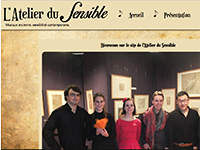
Site web réalisé pour l'ensemble de musique baroque L'Atelier du Sensible.
> Visiter le site
Date : Mai 2014
Groupe : Binôme avec Robin Lasne
Cadre : Cours de HTML/CSS/Javascript en première année de formation IMAC.
Portfolio personnel
Ce site, réalisé en style "one-page" pour me présenter ainsi que mes compétences et mes travaux.
Date : Janvier 2015
Groupe : Projet individuel
Cadre : Cours de HTML/CSS/Javascript en deuxième année de formation IMAC.
ArkanoPong
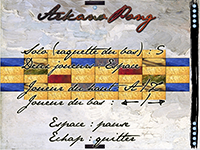
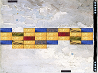
Jeu hybride entre le casse-brique et le pong, programmé en OpenGL 2 et langage C.
Fonctionnalités implémentées : différentes solidités de briques, bonus, intelligence artificielle, possibilité de créer des niveaux...
Le thème graphique développé évoque le domaine de la peinture, avec notamment les textures des éléments tirés de détails de tableaux.
Date : Mai 2014
Groupe : Binôme avec Robin Lasne
Cadre : Cours de programmaton et synthèse d'image en première année de formation IMAC.
Programme HDR
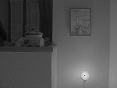
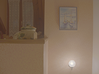
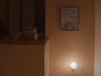
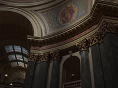
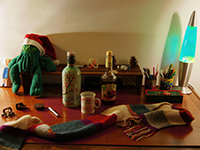
Programme en C++ utilisant la bibliothèque mathématique Eigen et permettant de créer une image à haut rang dynamique (HDR) à partir de photos prises avec différents temps d'exposition.
Fonctionnalités implémentées : HDR en noir et blanc, HDR en couleur, correction de pixels "morts", tone mapping (mappage des tons) en fonction sigmoïde pour une meilleure colorimétrie de l'image finale.
Date : Décembre 2014
Groupe : Binôme avec Robin Lasne
Cadre : Cours de mathématiques appliquées à l'informatique en deuxième année de formation IMAC.
Spacecraft
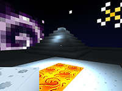
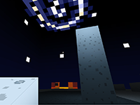
Clone du jeu 3D Minecraft, programmé en OpenGL 3 et langage C++.
Fonctionnalités implémentées : rendu de blocs et de lumières, chargement et sauvegarde de maps, vue subjective avec déplacement, saut, chute et collision dans les blocs, possibilité de poser et de détruire des blocs pour façonner un paysage, curseur au centre de l'écran, visuel du type de bloc qu'on est sur le moins de poser et possibilité de changer.
Le thème graphique plonge le joueur dans l'espace, sur un planète entourée d'étoiles et de galaxies, avec des textures en pixel-art permettant de jouer avec différents types de pierres et de gemmes.
Date : Janvier 2015
Groupe : Maxime Engel, Maxime Gilbert, Robin Lasne
Cadre : Cours de programmaton et synthèse d'image en deuxième année de formation IMAC.
Photographie
Voici quelques unes de mes photos. Vous pouvez en voir davantage sur mon blog.
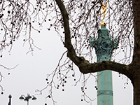
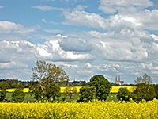
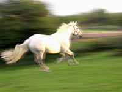
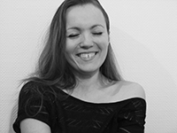
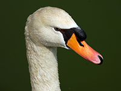
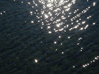
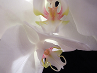
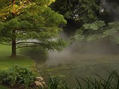
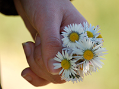
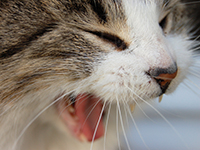
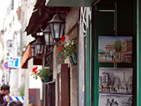
Arts manuels
Dessin & Peinture
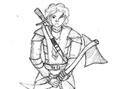
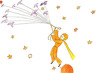
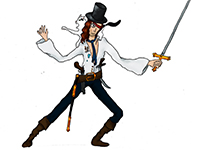
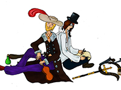
Calligraphie & Reliure
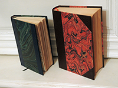
J'ai suivi cet été deux stages, un de calligraphie et un de reliure, qui m'ont permis de m'initer à ces disciplines très exigeantes et gratifiantes. Je n'ai pas le temps de les pratiquer pour le moment, mais j'espère pouvoir un jour m'améliorer !
(Plus d'images à venir bientôt.)
Projets en cours
Un jour d'écume
Pour le projet tutoré de deuxième année d'IMAC, moi et Robin avons choisi de faire un court-métrage d'hommage à Boris Vian et à l'écriture de son roman L'Écume des jours.
Il mêlera images réelles, animation traditionnelle et stop-motion dans le but de recréer ce que pouvait être l'imaginaire de l'auteur à ce moment de sa vie.
Vous pouvez suivre l'avancement du projet sur sa page facebook.
À une passante
Projet personnel de très court métrage inspiré du poème "À une passante" de Charles Baudelaire.


{kind=link}
{kind=link}
{kind=link}
{kind=link}
{kind=link}
{kind=link}
{kind=link}
{kind=link}
{kind=link}
{kind=link}
{kind=link}
{kind=link}
{kind=link}
{kind=link}
{kind=link}
{kind=link}
{kind=link}
{kind=link}
{kind=link}
{kind=link}
{kind=link}
{kind=link}
{kind=link}
{kind=link}
{kind=link}
{kind=link}
{kind=link}